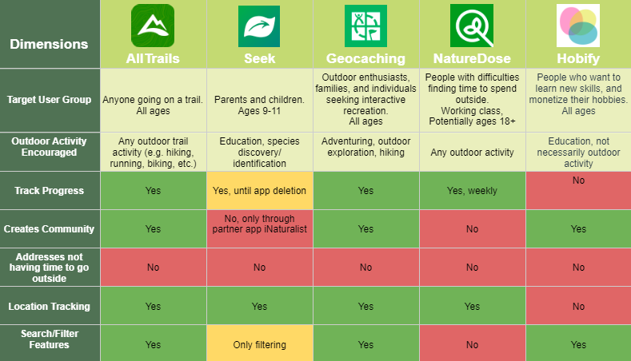
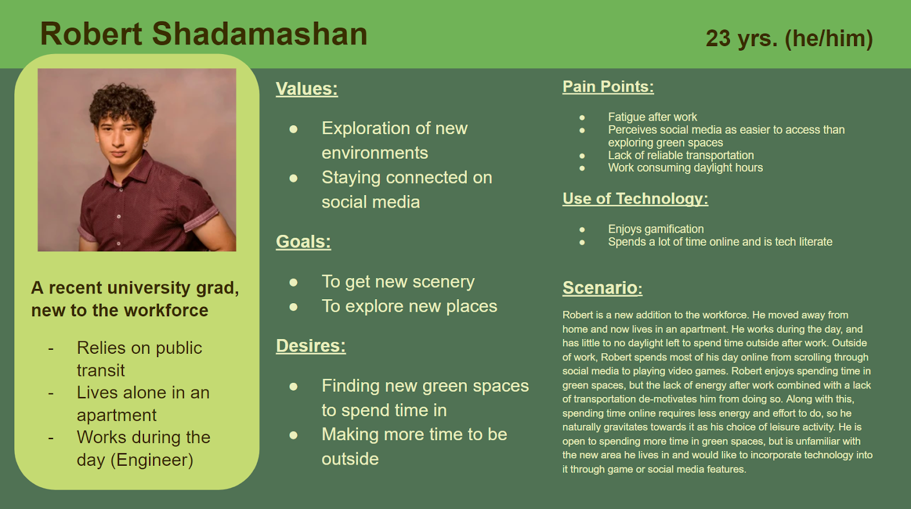
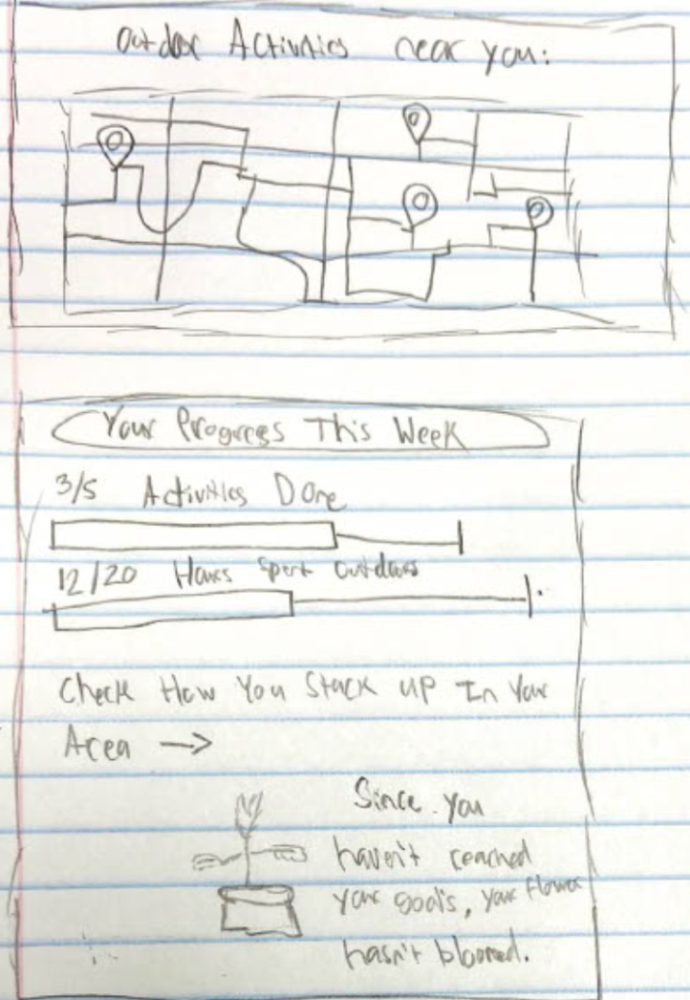
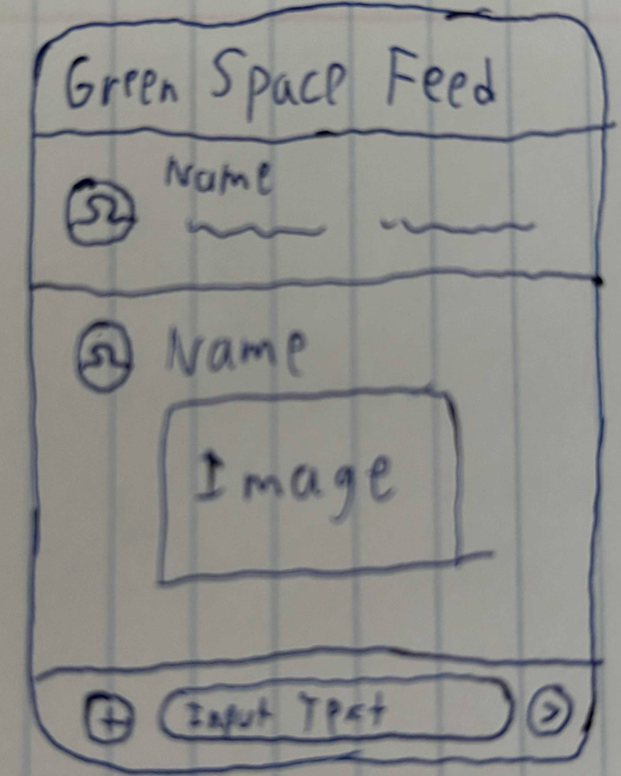
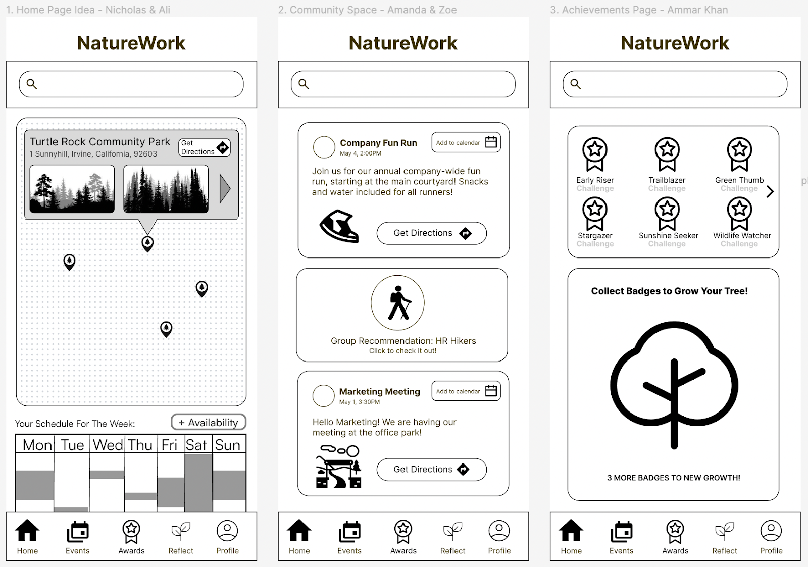
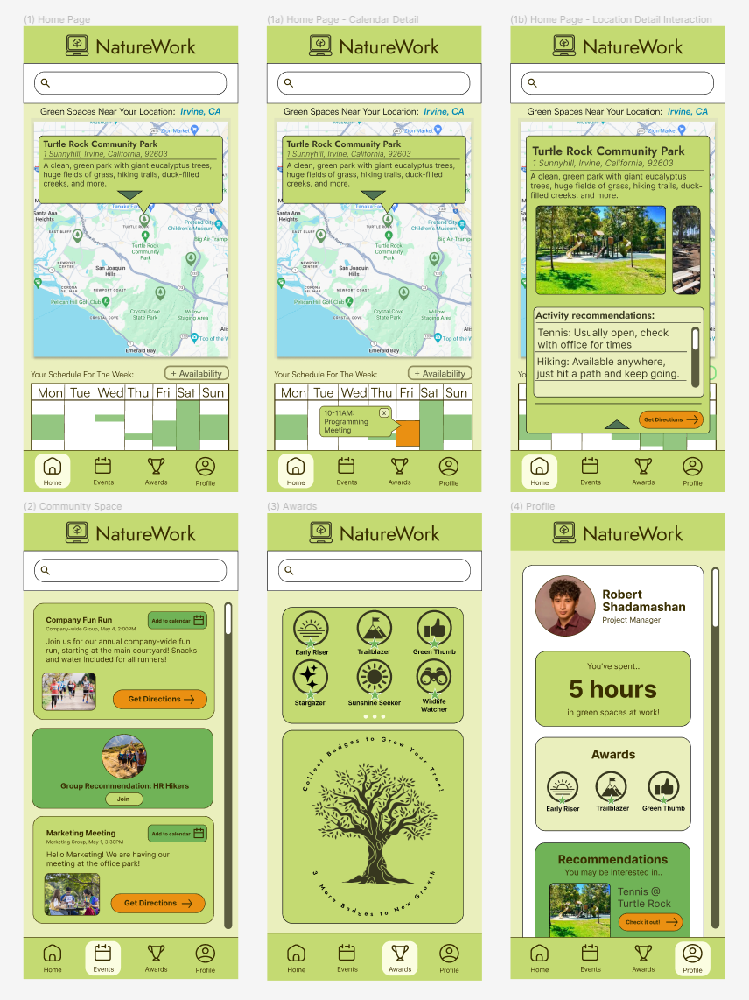

How might we design an application to encourage working professionals in the US to explore green spaces?
INF 132 | Project in Human-Computer Interaction By Alphabet Soup: Ali, Amanda, Ammar, Nicholas, Zoe
FigmaProject Introduction:
Given that the parameters of this project aim to address an important topic related to health and well-being, our group was interested in developing an application to encourage more time in outdoor spaces. Spending time in nature has been shown to improve physical and mental health (UC Davis Health, 2023). We thought about what demographics may struggle with this most, and according to a 2019 report by the APM Research Lab, 31% of adults report work being the main reason for not spending more time in nature. This initial brainstorm helped us solidify the details of the project we would endeavor on.
Competitive Analysis:
Before finalizing our problem statement, we culminated research on other applications encouraging users to explore the outdoors. We assessed several dimensions across these competitors, including whether they allowed users to track their progress, created a community environment, and our main issue – creating time in the day to go outside. A gap that we identified across our platforms was an app that fulfills all of the following: (1) our target market of working professionals, subsequently (2) being able to encourage these users to get outside if they are busy, and (3) creating a community that tracks their progress. Our problem statement focuses on individuals who may need more incentivization to get outside, be it for education, health, or mental well-being. That being said, we can learn from the UI/UX and specifically social/community building and UI/UX design features our competitors have displayed and create an application that helps busy professionals create habits that include green space exploration.
Problem Statement:
At this point in our project, we had sufficient information to create our problem statement:
“How might we design an application to encourage working professionals in the US to explore green spaces?”.
To synthesize as user tasks, our research showed us that a feasible way to solve this is including green spaces in a user’s regular workday, such as taking meetings outside, finding free time in one’s work calendar, or developing an outdoor-friendly community at the workplace.
User Research:
We then each conducted interviews with working professionals at a variety of points of their careers that represented different user needs. All of our interview participants were working professionals working full time, with a majority working primarily between the hours of 9 am-5 pm. We found that while there is an overall desire to spend more time in green spaces with relatively short distances to nearby green spaces, the challenge lies in finding engaging activities that cater to various interests, perceptions, and energy levels. Work commitments consume our participants’ daylight hours, leaving professionals too tired to engage in outdoor activities after work. At the same time, participants expressed a preference for daytime outdoor experiences and are willing to incorporate technology into these activities, as long as it enhances rather than distracts from their time in green spaces. Participants were motivated by applications with gamification and social media-esque features. There are recommendations that organizational culture, including management promoting green spaces as integral to work, and the incorporation of incentives or goals, could encourage individuals with these schedules to prioritize outdoor time.
Personas:
From these insights, we were able to create two personas: the middle-aged parent with familial commitments, and the recent university graduate stepping into the full-time workforce.

Low-Fidelity Prototyping:
With the user research we gathered and the personas we created, we highlighted the most common user needs and traits. The main aspects we highlighted in the interviews were that users would like gamification and social media features, users would like to spend more time in green spaces, users struggled to find engaging activities to do in green spaces, and users have difficulty finding time to spend in green spaces. Each team member then drew up low-fi prototypes based on these insights to communicate relevant features that could be included in the design of NatureWork.
Home Screen Low Fidelity Prototypes:

Community Space Low Fidelity Prototypes:

Achievements Page Low Fidelity Prototypes:

Mid-Fidelity Prototyping:
After creating our low-fidelity prototypes separately, we gathered to compare ideas regarding the functionalities we made. We found multiple instances of gamification features, social media features, and activity recommendation features in our prototypes so we decided to create screens to build on these ideas further. We decided to create a home screen where the user could find green spaces near them and check their availability for the week. The community space would be a shared feed for people in a company to view workplace events. The achievements page provides gamification features for users to complete tasks in green spaces and get rewards for them. We coordinated keeping the search bar and navigation bar consistent across the screens to maintain proper design principles.
Mid-fidelity Prototype Components:
High-Fidelity Prototyping:
Our first high-fidelity prototype did not do much to change the structure of our mid-fidelity one, we simply expanded on each of the concepts. The biggest changes we made were adding our color palette to the prototype, getting rid of the unused “reflect” category, and adding a personal user profile page. We also introduced a few elements of interactivity, like the calendar pop-up that showcases how the app would show booked events. After receiving peer review for these prototypes in class, we adjusted this prototype to form our final version of the project.
Final Product:
This is the final product of our quarter of work on this project! We learned a lot over these 10 weeks, and while not perfect, we are proud of what we were able to produce!
The main pieces of feedback we implemented into this prototype were that our peers found the colors of the previous iteration overwhelming, so we scaled them back, adjusted text sizing to better convey information hierarchy, simplified some of our pop-ups, and increased the size of text and buttons, and got rid of redundancies such as activity recommendations within the profile page. We also adjusted the intractability of the pop-ups, by adjusting them to full-fledged pages, to better reflect how mobile applications work in practice.
Component Information:
(1) Home screen: Contains a calendar users can fill out to show when they are available and marks nearby green spaces users can select and view details for. Selecting a green space on the map display displays a pop-up with info regarding the green space (Screen 1a). This pop-up then takes the user to a page for the specific location to view images of the space, get activity recommendations, and get directions to the green space (Screen 1b). Selecting an occupied time slot on the calendar will display the event that occurs at that time (Screen 1c)
- User needs addressed: Work being the main detractor from green space-time, integrating green space into the workday.
- Reference: Georgia Brown and Robert Shadamashan persona; Calendar shows Georgia’s availability to spend time outside and the map allows Robert to find new green spaces around him .
(2) Community space: Group feed that allows users within a workplace to share outdoor activities and events, including workplace meetings.
- User needs addressed: Work being the main detractor from green space-time, integrating green spaces into the work day. Need for community and social interaction that has to do with green spaces.
- Robert Shadamashan's persona; allows him to keep his value of wanting to stay connected with others while in green spaces. Georgia Brown's persona; allows her to spend time outside during her workday so she does not have to budget her time outside of work to go outside. Both personas show a deep need and admiration for others to be around them whilst interacting with nature, whether that be for commitment needs or other reasons.
(3) Achievements: Displays a list of badges users can get by fulfilling requirements involving being in green spaces. Acquiring badges shows users’ progress by growing the tree as they attain more.
- User need addressed: Gamification of outdoor activity for motivation. Tracking of progress
- Reference: Robert Shadamashan persona; wants to incorporate social media/game features into the exploration of green spaces.
(4) Profile: Provides an overview of a user’s achievements, activity recommendations, and culminated outdoor time. This page has been made to supplement the mid-fidelity and crucial features in our application that address user needs.
- User need addressed: The ability to have a personalization and progress tracker to better understand the users’ tendencies and what they enjoy, and allow the user to see what they have accomplished besides what the achievements track.
Final Reflection:
Designing this application aimed at encouraging working professionals to explore green spaces has been a rewarding experience for our team. Over the quarter, we encountered numerous challenges and witnessed the evolution of our project from conceptualization to the creation of our high-fidelity prototypes. One of the most enlightening aspects of this project was the user research phase where we had the opportunity to engage with professionals from diverse backgrounds and career stages. Through interviews, we gained deep insights into the barriers that prevented people from spending more time in nature as well as their motivations/preferences when it came to outdoor activities. These insights not only informed our design choices but allowed us to resonate with our target audience. The iterative design process was another important aspect of our journey as we continually refined and improved upon our prototypes based on the feedback we received from our peers and our professor. Each iteration brought us closer to our final prototype for NatureWork, as we experimented with different features and functionalities such as integrating gamification elements, social features, and activity recommendations to create an engaging user experience. Looking back on the project we recognize the importance of flexibility and adaptability in the design process. We encountered unexpected challenges and pivoted our approach when necessary, demonstrating our problem-solving skills. Additionally, we gained a deeper appreciation for human-centered design in addressing real-world problems. As we conclude our project, we reflect on the growth experienced as a team. While there is always room for improvement, we are grateful to have applied our knowledge in a practical setting and contributed to a meaningful mental health issue.
References
APM Research Lab Staff. (2014). APM Research Lab. APM Research Lab. https://www.apmresearchlab.org/nature UC Davis Health. (2023, May 3). 3 ways getting outside into nature helps improve your health. UC Davis Health. https://health.ucdavis.edu/blog/cultivating-health/3-ways-getting-outside-into-nature-helps-improve-your-health/2023/